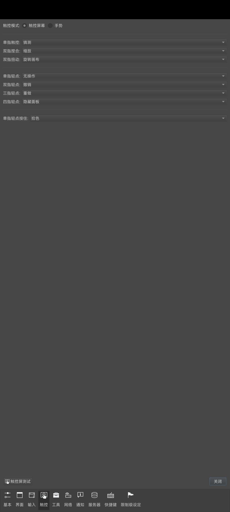

Drawpile 不只是多人画布：5 个藏得真深的冷门功能
Drawpile 常被当成朋友一起涂鸦的共享画布，其实它藏着蒙版替身、双剪贴叠加、聊天框权限命令等一堆进阶玩法，翻到底层设置才挖得到。
你以为 Drawpile 就是一群人围着一块共享画布瞎涂鸦的玩具？我以前也是这么想的。直到翻了它的Drawpile官网又在某次熬夜改画时翻遍了混合模式下拉菜单、偶然在聊天框敲了个斜杠、把文件菜单拖到最底部——才发现这套东西藏了一堆"官方都不宣传"的进阶功能，完全可以把它当独立绘画软件用，而不只是多人协作的前端。
下面这几个是我翻底朝天才挖出来的，每一个都解决了我实际遇到过的痛点，不知道太亏。
一、聊天框不是只有灌水——斜杠命令批量管权限
Drawpile 的聊天窗口，99% 的时候大家在里面聊"你这笔刷哪来的""等下这帧我先画"。但你在聊天框里敲一个 /modhelp 回车试试——瞬间会列出一长串操作员专用命令。这些命令藏得真深，用户列表右键菜单能调的都是单个操作，批量只有这里能做。
最实用的两个：/trust-all-users 一键把所有在线访客升为可信用户（不用一个个右键 Trust），/set-layer-acl-tiers all operators 一次性把所有图层锁死只有操作员能改——半夜开公共会话怕陌生人乱涂，一条命令下去画布就安全了。还有个救命的 /become-operator，当你的会话所有操作员都掉线、又设了 Operator Password 时，知道密码的人输这条命令就能夺回控制权，不至于会话变成无政府状态。
多人会话开多了的人都懂——权限管理是最烦的事，这几条命令能省掉至少一半的右键菜单点击。
二、没有原生蒙版？Erase 混合层给你做替身
很多人从 PS/Krita 过来的第一反应就是"Drawpile 没有图层蒙版，差评"。其实它给你留了个替代方案，只是藏在混合模式下拉的最下面，叫 Erase。
做法很简单：把你想做遮罩的图层放进一个文件夹，在文件夹顶部新建一个图层，把它的混合模式设成 Erase，然后在这层上画——白色笔触擦掉下方对应区域、灰色擦淡、不画的地方完全不影响。这样就实现了"在一张控制层上画的东西决定下方哪些部分显示"，和蒙版的思路一样。
唯一要记住的：这个擦除是破坏性的——下方图层的像素真的被擦掉了，撤回只能靠 Undo。所以如果你需要反复调整遮罩、来回试效果，最好先画个备份层藏起来，或者导出到 Krita 用原生蒙版做后期。多人会话里用 Erase 层尤其要小心——别人一不留神就可能擦掉你辛辛苦苦画的东西，记得给这层设 ACL 权限锁。
三、两种剪贴方式同时开——大部分人不知道 2.3.0 之后支持
Drawpile 里有两种剪贴功能：Clip to Layer Below 只粘紧挨着的下一层，Inherit Alpha 粘同文件夹里所有下层的合集。前者像 SAI/CSP 的 Clip，后者像 Krita 的 Inherit Alpha，两套逻辑各有拥护者。
藏得最深的是——2.3.0 之后这两个可以同时启用。图层面板左上那两个小按钮，先点第一个 Clip 到紧挨着的下层，再点第二个同时 Inherit Alpha 到整个文件夹。实际中很少有人需要这么极端的组合，但灵活性瞬间拉满：你想让一层既精确跟着某一层的轮廓走、又同时受整个文件夹合集的约束？组合拳就能做到。
平时画角色头发阴影的流程是：文件夹里放底色层（无剪贴）→ 阴影层（Clip 到底色）→ 高光层（Clip 到阴影），每层只在下层轮廓内，干净利落。但如果你想让一层效果同时粘底色和高光两层——单独的 Clip 做不到，Inherit Alpha 又太宽泛，同时开就是标准答案，Drawpile文档里对这两种剪贴的适用边界有更细的说明。

四、文件菜单拖到最底——缩时视频从历史快照生成
File 菜单一路往下翻，翻到最底部有个 Make Timelapse。很多人以为这功能就是简单录屏，其实它根本不是录屏——它是从 Drawpile 的操作历史快照里生成视频。
这意味着什么？你画了三个小时的过程，它可以压缩成三十秒的缩时视频，但中间的每一帧都来自真实的历史记录，不是屏幕录像的像素拷贝。更妙的是，这个功能和动画时间轴是两回事——你不需要提前开时间轴记录，它自动帮你存着所有的操作快照，随时可以生成缩时。
导出选项也不少：GIF、MP4、WebM（支持透明通道！）、甚至 PNG 序列方便导入 Premiere 做后处理。想晒创作过程给朋友看，直接点这一项就完事了，不用额外开 OBS 录屏。
五、ORA 和 PSD 都能读写——跨软件协作的暗门
Drawpile 从下载拿到的默认安装包已经自带完整的导出能力，可以导出 PSD 和 ORA（OpenRaster），这个文档里提过，但很少有人深究这意味着什么。
ORA 是开源交换格式，把所有图层打包进一个 ZIP。Krita、MyPaint、GIMP、Pinta、Inkscape 都原生支持它。流程是 Drawpile 里多人协作打完线稿底色 → 导出 ORA → Krita 里打开继续做滤镜、笔刷、精修 → 画完还可以再导出 ORA 回 Drawpile 回看。整个过程不丢图层、不丢混合模式。
PSD 也支持——2.2 起就能读写。PS 用户不用装任何插件就能无缝衔接，唯一要注意的是 Drawpile 没有文字层和智能对象，PS 里加的这些东西回不来，但图层数据本身是完整的。
这是 Drawpile 定位的核心延伸：它不强求你在里面画完一切——多人协作打基础、复杂后期交给专业软件，才是它的正确打开方式。
最后说一个坑
Erase 混合层的破坏性我已经提过，但还有个更隐蔽的：多人会话里所有图层属性（包括混合模式、剪贴设置、ACL）都会实时同步给所有人。如果会话开始前大家没统一约定用 Clip 还是 Inherit Alpha，很可能你这边看到的效果和别人那边完全不一样——同一个剪贴层在你的图层面板里是 Clip，别人的客户端上可能因为图层顺序不同而 Inherit Alpha 到了另一组图层。建议开会话前先选一种剪贴方式当默认，省得画到一半乱套。
把 Drawpile 当独立绘画软件用、把多人协作当成额外附赠的能力——这个思路一旦转过来，你会发现它的功能密度远高于一开始对它的预期。大部分人只用到了它表面的共享画布，下面这层才是真正值得翻的东西。
Drawpile 的源码和文档都是开源的，三个镜像仓库都能拿到完整的资料：GitHub 上的主仓库维护着最新版本，Gitee 方便国内用户快速克隆，GitCode 做了额外备份以防万一。